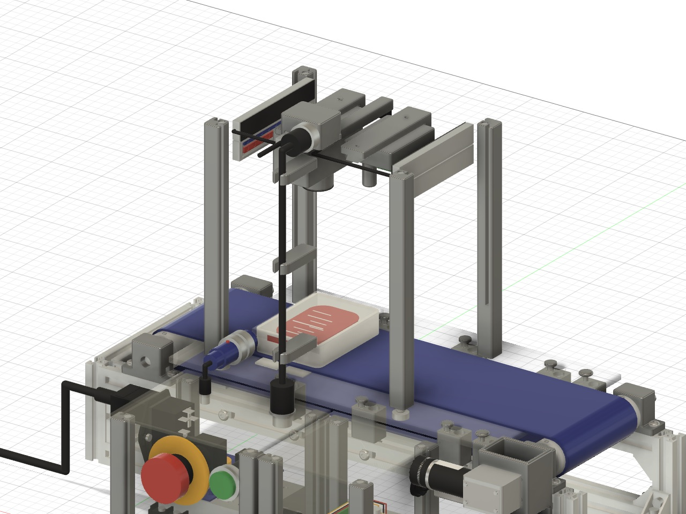
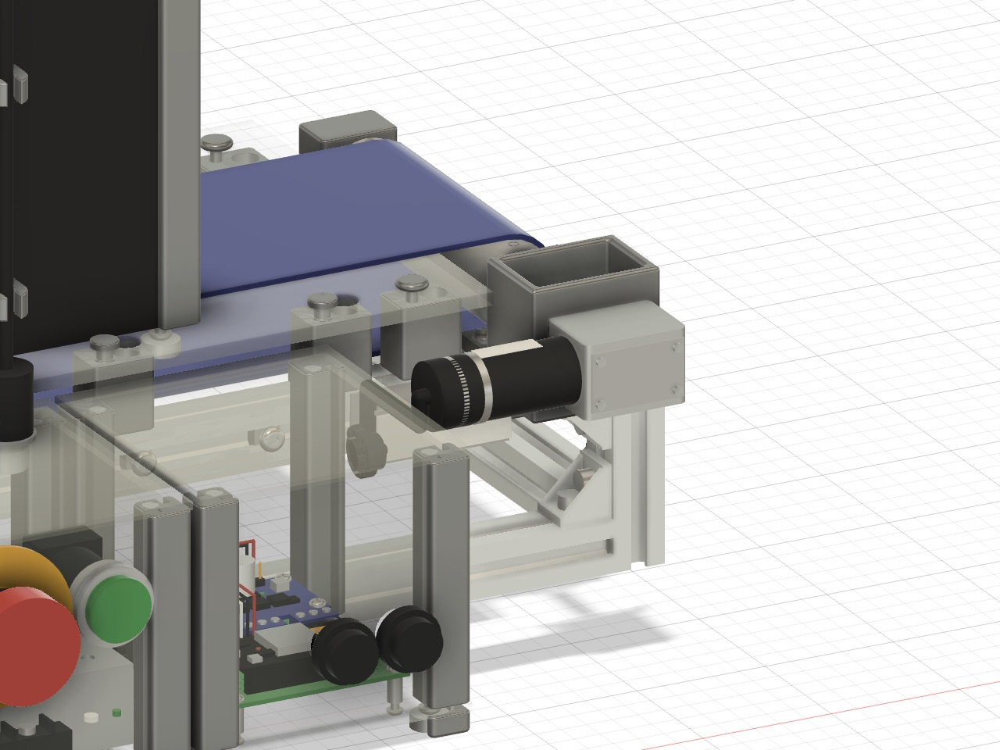
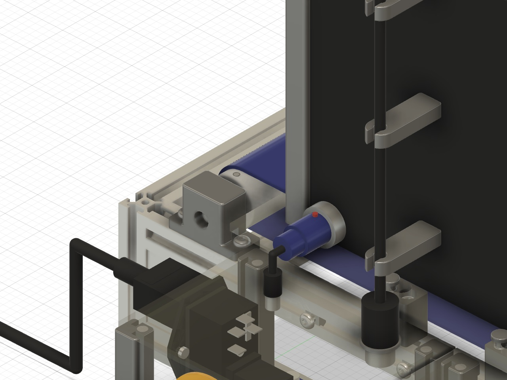

ภาพจากแบบ
เรนเดอร์จาก Fusion 360

แพ็กเนื้อวัว
ถาดโฟม 65×90 มม. แผ่นซับ สเต็ก ฟิล์ม สติกเกอร์ ขนาดตามมุมมองกล้อง

อุโมงค์ปิดแสง
เสาพิมพ์มีร่องสอดแผ่นอะคริลิกดำ ตลับกล้องหางเหยี่ยว

ชุดขับ
มอเตอร์ DC เกียร์ฉาก เอนโค้ดเดอร์ รางไวร์ดักท์ 20×20

กล่องควบคุม
อะคริลิกใส เสาพิมพ์ แผงสอดร่อง ฝาแม่เหล็ก

ไฟเข้าเครื่อง
ช่อง IEC C14 มีฟิวส์+สวิตช์ สาย AC ปลั๊กไทย

ลูกกลิ้งและแท่นลูกปืน
ลูกกลิ้งพิมพ์ 608ZZ ยึดบนรางด้วย M5 + T-nut